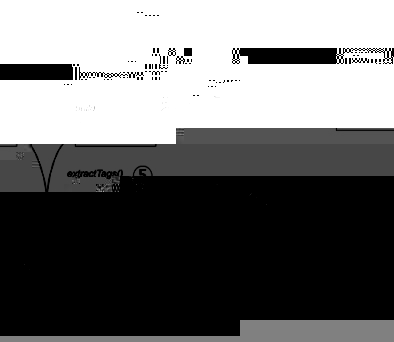

Popitam
What is Popitam ?
Idea and development of Popitam are part of a PhD work performed in 2005 at
the Swiss Institute of Bioinformatics
in
the Proteome
Informatics
Group (PIG). Popitam uses a tag-oriented approach and performs a
database-guided spectrum interpretation. It identifies spectra from
modified and/or mutated
peptides without "a priori"-knowledge about the expected types of
modification. Popitam creates a spectrum graph which is specifically parsed for
each candidate peptide
extracted from a database. Popitam searches the graph for
all tags (of the longest possible length) that match subsequences of
the
current candidate peptide. Then, the tags are combined according to
compatibility rules to build plausible spectrum interpretation
scenarios. Usually, a scenario consists of one or several tags,
separated by gaps. Using the flanking masses of the tags, Popitam
classifies gaps either as modification or mutation events, or as lack
of information in the spectrum due to low peak
statistics. Finally, each scenario
is scored and the candidate peptide with the highest-scoring scenario
is
proposed as the identification result.
Here are the main steps of Popitam's algorithm:

- The MS/MS spectrum is preprocessed in order to remove isotopic
peaks and filter background noise.
- The MS/MS spectrum is transformed into a spectrum graph (which is
a widely used structure in de novo
sequencing approaches).
- Candidate peptides are selected from a database according to
filtering criteria like taxonomy, accession code (AC), digestion rules
and precursor mass error.
For each candidate peptide:
- the peptide sequence is indexed as a suffix tree
- tags that are consistent with both the current candidate sequence
and the peak pattern in the spectrum are extracted from the spectrum by
simultaneous parsing the spectrum graph and the suffix tree.
- using the list of extracted tags and compatibility rules between
the tags, Popitam builds various possible interpretation scenarios. A scenario corresponds
to a run-and-jump path in
the
spectrum graph.
- each scenario is scored using functions learned by Genetic Programming (it
is possible to defines one's own scoring function and to use Popitam
with it).
The peptide that obtained the highest scenario score is proposed as the
identification result. The scenario indicates the emplacement and
shifts
of the modifications
Want to try it yourself ?